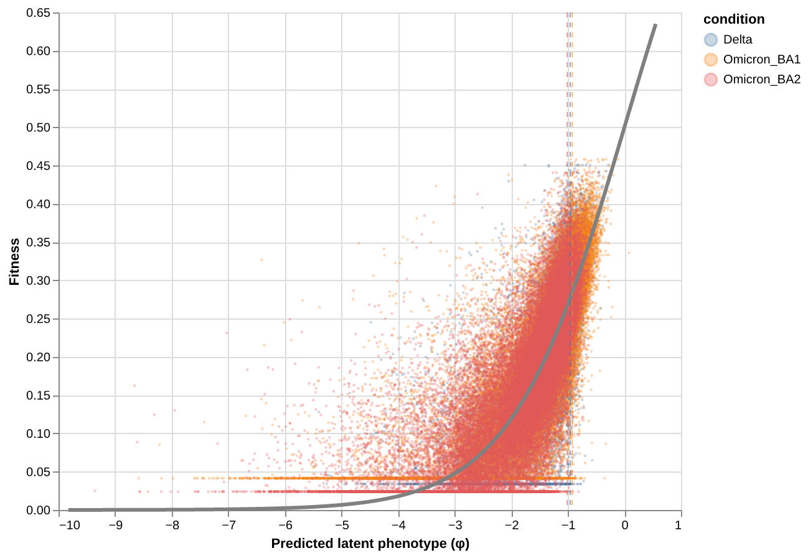
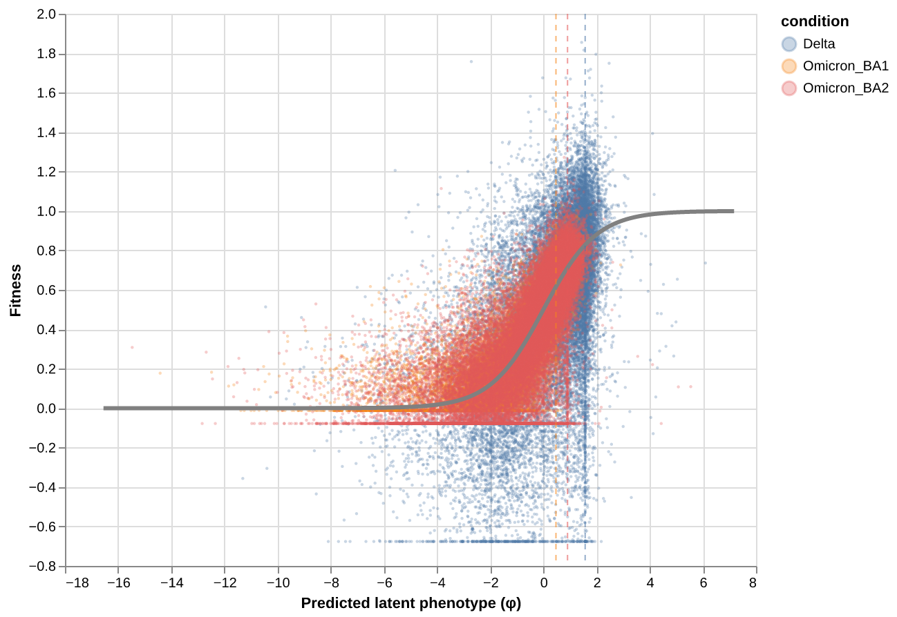

Model Evaluation¶
Evaluate fitted spike models: convergence diagnostics, sparsity analysis, replicate parameter correlations, global epistasis plots, and mutation parameter export.
Outline
Load fitted models and training data
Convergence diagnostics
Shift sparsity analysis
Replicate parameter correlations
Global epistasis plots
Export mutations DataFrame and intermediate CSVs
[1]:
import warnings
warnings.filterwarnings("ignore")
import os
import pickle
import sys
sys.path.insert(0, "notebooks")
import matplotlib.pyplot as plt
import numpy as np
import pandas as pd
import multidms.plot
from multidms.model_collection import ModelCollection
from _common import load_config, combine_replicate_muts
[2]:
config_path = "config/config.yaml"
output_dir = None
[3]:
# Parameters
config_path = "config/config.yaml"
output_dir = "results-prod-228-per-condition-loss-trajectory"
[4]:
config = load_config(config_path)
spike = config["spike"]
fit_config = spike["fitting"]
lasso_choice = spike["lasso_choice"]
condition_titles = spike["condition_titles"]
condition_colors = spike["condition_colors"]
experiment_conditions = spike["experiment_conditions"]
if output_dir is None:
output_dir = spike.get("output_dir", "results")
Load data¶
[5]:
with open(os.path.join(output_dir, "fit_collection.pkl"), "rb") as f:
fit_collection_df = pickle.load(f)
func_score_df = pd.read_csv(
os.path.join(output_dir, "training_functional_scores.csv")
).fillna({"aa_substitutions": ""})
model_collection = ModelCollection(fit_collection_df)
print(f"Loaded {len(fit_collection_df)} fitted models")
print(f"Loaded {len(func_score_df):,} training variants")
Loaded 14 fitted models
Loaded 303,007 training variants
Convergence diagnostics¶
[6]:
# Build summary table with fitted alpha and beta0 parameters
summary_rows = []
for _, row in model_collection.fit_models.iterrows():
jm = row.model._jax_model
r = {
"dataset": row.dataset_name,
"fusionreg": row.fusionreg,
"converged": row.converged,
"fit_time": row.fit_time,
}
# Alpha: shared scalar or per-condition dict
if hasattr(jm.α, "items"):
for cond in experiment_conditions:
title = condition_titles.get(cond, cond)
r[f"alpha_{title}"] = float(jm.α[cond])
else:
r["alpha"] = float(jm.α)
# Per-condition loss
for cond in experiment_conditions:
loss_col = f"{cond}_loss_training"
if loss_col in model_collection.fit_models.columns:
r[f"loss_{condition_titles.get(cond, cond)}"] = row[loss_col]
# Fitted beta0 per condition
for cond in experiment_conditions:
title = condition_titles.get(cond, cond)
r[f"beta0_{title}"] = float(jm.φ[cond].β0)
summary_rows.append(r)
summary_df = pd.DataFrame(summary_rows)
print(f"{summary_df['converged'].sum()}/{len(summary_df)} models converged\n")
summary_df.round(3)
11/14 models converged
[6]:
| dataset | fusionreg | converged | fit_time | alpha | loss_Delta | loss_BA.1 | loss_BA.2 | beta0_Delta | beta0_BA.1 | beta0_BA.2 | |
|---|---|---|---|---|---|---|---|---|---|---|---|
| 0 | rep_1 | 0.0 | False | 417 | 5.537 | 5760.938 | 13738.307 | 12008.644 | 0.338 | 0.552 | 0.237 |
| 1 | rep_1 | 0.4 | True | 305 | 6.030 | 6090.164 | 13839.510 | 12447.242 | 0.022 | 0.328 | -0.007 |
| 2 | rep_1 | 0.8 | True | 255 | 6.124 | 6576.189 | 13879.085 | 12944.956 | -0.025 | 0.284 | -0.047 |
| 3 | rep_1 | 1.6 | True | 246 | 6.011 | 8111.376 | 13854.277 | 14209.962 | 0.014 | 0.335 | -0.001 |
| 4 | rep_1 | 3.2 | False | 435 | 4.253 | 12749.646 | 13512.037 | 17292.011 | 0.694 | 1.406 | 1.077 |
| 5 | rep_1 | 6.4 | True | 179 | 5.879 | 12681.381 | 13878.959 | 18678.807 | 0.027 | 0.376 | 0.054 |
| 6 | rep_1 | 12.8 | True | 359 | 3.320 | 15087.932 | 14345.431 | 23683.931 | 1.165 | 2.465 | 1.959 |
| 7 | rep_2 | 0.0 | False | 416 | 5.437 | 6579.727 | 9540.099 | 8978.857 | 0.333 | 0.628 | 0.293 |
| 8 | rep_2 | 0.4 | True | 322 | 5.942 | 6979.646 | 9653.032 | 9413.130 | 0.048 | 0.384 | 0.028 |
| 9 | rep_2 | 0.8 | True | 283 | 6.067 | 7573.696 | 9682.811 | 9860.196 | -0.008 | 0.331 | -0.023 |
| 10 | rep_2 | 1.6 | True | 227 | 6.041 | 9073.315 | 9716.935 | 11193.440 | -0.001 | 0.341 | -0.014 |
| 11 | rep_2 | 3.2 | True | 248 | 5.656 | 11711.544 | 9652.777 | 13146.302 | 0.148 | 0.513 | 0.150 |
| 12 | rep_2 | 6.4 | True | 178 | 5.821 | 14621.661 | 9737.317 | 16076.785 | 0.066 | 0.429 | 0.078 |
| 13 | rep_2 | 12.8 | True | 402 | 3.330 | 17769.353 | 9946.174 | 21824.565 | 1.594 | 2.987 | 2.016 |
[7]:
conv_data = model_collection.convergence_trajectory_df(
id_vars=("dataset_name", "fusionreg")
)
multidms.plot.convergence_trajectory(
conv_data,
id_cols=["dataset_name", "fusionreg"],
title="Convergence trajectories",
)
[7]:
Shift sparsity¶
Fraction of shift parameters that are exactly zero, across the regularization grid. Uses the ModelCollection.shift_sparsity method which returns an interactive Altair chart faceted by dataset and shift parameter.
[8]:
sparsity_chart, sparsity_data = model_collection.shift_sparsity(return_data=True)
sparsity_chart
cache miss - this could take a moment
[8]:
Replicate parameter correlations¶
Correlation of mutation parameters (beta, shift) between replicates across the regularization grid. Uses the ModelCollection.mut_param_dataset_correlation method which returns an interactive Altair chart.
[9]:
corr_chart, corr_data = model_collection.mut_param_dataset_correlation(
return_data=True
)
corr_chart
[9]:
Global epistasis plots¶
Global epistasis (GE) landscape at the chosen lasso strength, showing the fitted sigmoid mapping from latent to observed phenotype.
[10]:
from IPython.display import display, Image
import tempfile
for ds_name in fit_collection_df["dataset_name"].unique():
representative = (
model_collection.fit_models
.query(f"fusionreg == {lasso_choice} and dataset_name == '{ds_name}'")
)
if len(representative) == 0:
print(f"No model at lasso={lasso_choice} for {ds_name}")
continue
model = representative.iloc[0].model
print(f"{ds_name} (fusionreg={lasso_choice}):")
chart = model.plot_ge_landscape()
with tempfile.NamedTemporaryFile(suffix=".png") as tmp:
chart.save(tmp.name, format="png", scale_factor=2)
display(Image(filename=tmp.name))
rep_1 (fusionreg=3.2):

rep_2 (fusionreg=3.2):

Export mutations DataFrame¶
Merge mutation parameters from both replicates at the chosen lasso strength.
[11]:
fit_dict = {}
for _, row in model_collection.fit_models.query(
f"fusionreg == {lasso_choice}"
).iterrows():
fit_dict[row.dataset_name] = row.model
mutations_df = combine_replicate_muts(fit_dict)
mutations_df["sense"] = np.where(
mutations_df["muts"].str.contains("*", regex=False),
"stop",
"nonsynonymous",
)
print(f"mutations_df: {len(mutations_df):,} mutations")
print(f" nonsynonymous: {(mutations_df['sense'] == 'nonsynonymous').sum():,}")
print(f" stop: {(mutations_df['sense'] == 'stop').sum():,}")
mutations_df.head()
mutations_df: 9,633 mutations
nonsynonymous: 9,312
stop: 321
[11]:
| mutation | wts | sites | muts | rep_1_beta_Delta | rep_2_beta_Delta | avg_beta_Delta | rep_1_beta_Omicron_BA1 | rep_2_beta_Omicron_BA1 | avg_beta_Omicron_BA1 | rep_1_beta_Omicron_BA2 | rep_2_beta_Omicron_BA2 | avg_beta_Omicron_BA2 | rep_1_shift_Delta | rep_2_shift_Delta | avg_shift_Delta | rep_1_shift_Omicron_BA2 | rep_2_shift_Omicron_BA2 | avg_shift_Omicron_BA2 | sense | |
|---|---|---|---|---|---|---|---|---|---|---|---|---|---|---|---|---|---|---|---|---|
| 0 | M1F | M | 1 | F | 0.000000 | 0.000000 | 0.000000 | 0.000000 | 0.000000 | 0.000000 | 0.000000 | 0.000000 | 0.000000 | 0.0 | 0.000000 | 0.000000 | 0.0 | 0.0 | 0.0 | nonsynonymous |
| 1 | M1I | M | 1 | I | -5.349418 | -3.530267 | -4.439843 | -5.349418 | -3.530267 | -4.439843 | -5.349418 | -3.530267 | -4.439843 | 0.0 | 0.000000 | 0.000000 | 0.0 | 0.0 | 0.0 | nonsynonymous |
| 2 | M1K | M | 1 | K | 0.000000 | -0.961019 | -0.480510 | 0.000000 | 0.000000 | 0.000000 | 0.000000 | 0.000000 | 0.000000 | 0.0 | -0.961019 | -0.480510 | 0.0 | 0.0 | 0.0 | nonsynonymous |
| 3 | M1L | M | 1 | L | 0.000000 | -0.782271 | -0.391136 | 0.000000 | 0.000000 | 0.000000 | 0.000000 | 0.000000 | 0.000000 | 0.0 | -0.782271 | -0.391136 | 0.0 | 0.0 | 0.0 | nonsynonymous |
| 4 | M1T | M | 1 | T | -4.273816 | -3.845033 | -4.059424 | -4.273816 | -3.845033 | -4.059424 | -4.273816 | -3.845033 | -4.059424 | 0.0 | 0.000000 | 0.000000 | 0.0 | 0.0 | 0.0 | nonsynonymous |
Save outputs¶
[12]:
groupby = ("dataset_name", "fusionreg")
collection_muts_df = model_collection.split_apply_combine_muts(
groupby=groupby
)
mutations_df.to_csv(os.path.join(output_dir, "mutations_df.csv"), index=False)
print(f"Saved mutations_df.csv ({len(mutations_df):,} rows)")
collection_muts_df.to_csv(os.path.join(output_dir, "collection_muts.csv"), index=False)
print(f"Saved collection_muts.csv ({len(collection_muts_df):,} rows)")
sparsity_data.to_csv(os.path.join(output_dir, "fit_sparsity.csv"), index=False)
print(f"Saved fit_sparsity.csv ({len(sparsity_data)} rows)")
corr_data.to_csv(os.path.join(output_dir, "library_replicate_correlation.csv"), index=False)
print(f"Saved library_replicate_correlation.csv ({len(corr_data)} rows)")
Saved mutations_df.csv (9,633 rows)
Saved collection_muts.csv (134,862 rows)
Saved fit_sparsity.csv (56 rows)
Saved library_replicate_correlation.csv (56 rows)